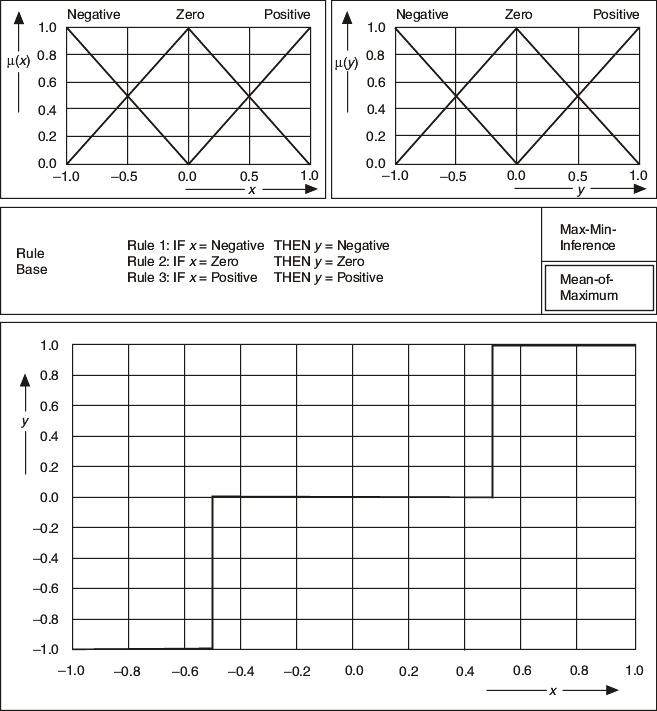
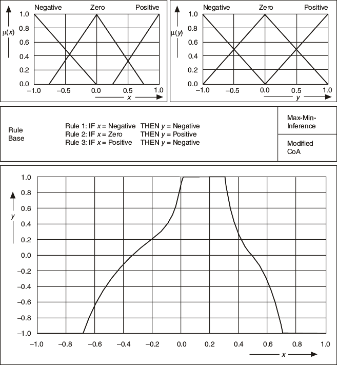

When you use the Mean of Maximum (MoM) defuzzification method, you calculate the most plausible result. In other words, the fuzzy controller uses the typical value of the consequent term of the most valid rule as the crisp output value. This behavior results in stepped output characteristics, as shown in the following image.

The previous image shows entirely overlapping membership functions for input and output terms.
The rule base itself has the biggest influence on the controller characteristic. The rule base determines the principal functionality of the controller.
The following image illustrates how the controller characteristic changes if you change the rule base of the previous example to include the following rules:
| Rule 1: | IF | x = negative | THEN | y = negative |
| Rule 2: | IF | x = zero | THEN | y = positive |
| Rule 3: | IF | x = positive | THEN | y = negative |
